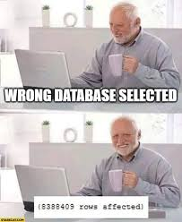
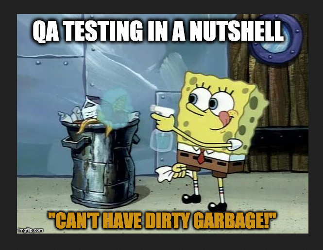

World Why Web?

Everybody
wants one
needs one
Good compensation
If you plan your career wisely
Who is it for?
It's for everyone (who is willing to learn)
Where Should I start?
roadmapsFrontend Developer


Backend Developer
DevOps
Full Stack

DBA
QA
Cybersec
Mobile Developer

UX Designer

Must Have/Known
Version Control Systems
Git
CVS
SVN
Mercurial
... etc
Good Code Editor Choice
VSCode
Atom
Sublime Text 3
PyCharm
NetBeans
... etc
Software Development Methodologies
Top 4DevOps
Rapid
Waterfall
Tech Stack
Top 5
Unit Testing
Test driven development
Jest
Mocha
Cypress
Testing Library
... etc
Levels
What's the diff?
Apprentice / Intern
0 to 1 year
Junior
1 to 3 years
Mid
~3 to 5 years
Senior
~5 years
Lead
~more than 5 Years
Soft Skills
Soft Skills


Why do we need soft skills?
What are the soft skills that we need?
Teamwork

A typical team consists of at least one backend, frontend, a designer, a QA, and a product owner.
Communication

Ideas, challenges, deadlines and commitments should be clear to all team members
Empathy/Emotional Intelligence

Do not be defined by IQ alone, EQ is equally important.
We work with people from different walks of life, having basic human empathy does wonders.
Empathy extends to design thinking, business analysis and also to QA engineering.
Open-Mindedness

What we do is not only technical but it is also creative work.
What is more important?
Hard skills
vs.
Soft skills


How to get that software engineering job?

Useful Links